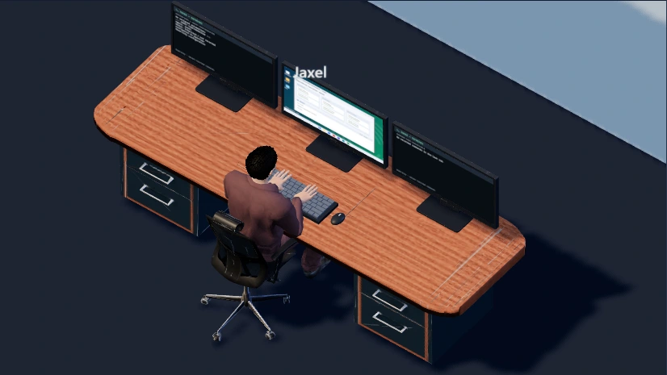

CUSTOM WORKFLOWS ON OPENCLAW
AI Agents & 3D Office
An AI-assisted operating system for daily work—with a spatial view of the team.

Daily assistance, organized by role
I built custom agent configurations and workflows for daily briefings, research, job discovery, document tasks, reporting, and business automation. Specialist roles, durable handoffs, and verification steps help keep longer-running work organized.
A visual layer for the organization
The Three.js office turns the agent directory into navigable rooms and workstations. Users can zoom into desks, select roles, and inspect available activity and automation information. The office is a visualization layer—not evidence that every displayed role is an independently running agent.
My contribution
Designed the role architecture, integrations, task workflows, checks, and 3D office experience around OpenClaw. OpenClaw is the underlying framework, not software I authored. The system supports my work while keeping review and authorization boundaries for external actions.
Only the office scene is shown. Private conversations, task contents, credentials, and internal access links are excluded.